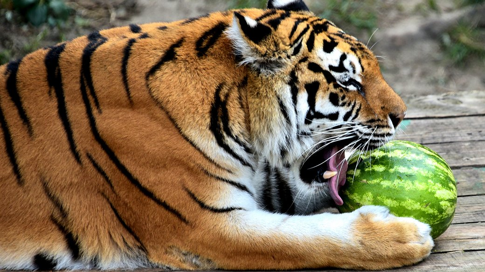
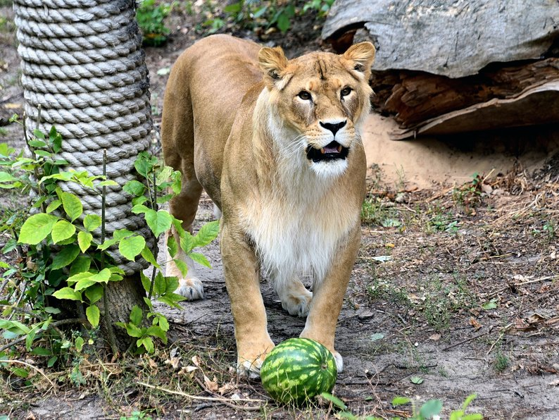
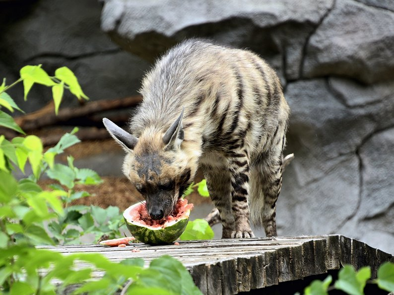

Кавунові вікенди для мешканців київського зоопарку: кого частуватимуть цими вихідними і як усе
відбувається THERE IS FONTS TRIAL TEXT

Частування тварин кавунами у Київському зоопарку. Фото: Київський зоопарк
У Київському зоопарку продовжують частувати тварин соковитими кавунами. Цими вихідними, 23 – 24
вересня, ласуватимуть мешканці Острова звірів: тигри, леви, дикобрази та гієни.
Про це інформує Київський зоопарк.
"Такі заходи – частина постійної зоологічної роботи зі збагачення середовища для тварин. І якщо для
левів та тигрів – це цікаві спортивні забавки з імпровізованим "м’ячем", то для гієн і дикобразів – це
ще й корисний смаколик", — йдеться у повідомленні.

Годування тварин кавунами у Київському зоопарку. Фото: Київський зоопарк
Також у Київському зоопарку оприлюднили графік показових годувань звірів 23-24 вересня, аби усі охочі
могли побачити як це відбувається. Першою 10:15 ласуватиме солодкою ягодою тигриця Амба. А останніми —
0 13:30 – гієни Хасан і Тигран.

Годування тварин кавунами у Київському зоопарку. Фото: Київський зоопарк
Острів звірів (вольєри знаходяться поруч), дикобрази – біля колеса огляду.
У Київському зоопарку нагадують, що під час повітряної тривоги показові годування призупиняються та
поновлюються після відбою.
Що відомо про тварин у Київському зоопарку
-
24 серпня у Київському зоопарку святкували День народження тигри Малюк та Рена.
Їм виповнилося 14 років.
-
У серпні єдиній горилі в Україні — самцю Тоні — виповнилося 49 років. Це не
тільки єдина горила в Україні, а й одна з найстаріших у Європі. Вже понад 20 років він мешкає у
столичному зоопарку.
-
У Київському зоопарку облаштували новий авіарій для родини врятованих папуг
Жако, які потрапили до зоопарку у 2022 році. Працівники створили у великому літньому
пташиному вольєрі умови, наближені до природних.
-
На початку березня лемур Байрактар відзначив день народження. Він народився
передчасно 3 березня минулого року. Мати відмовилась від дитинчати через стрес від гучних
вибухів.
-
Цієї весни у Київському зоопарку створили понад 19 нових родин. Пари та родини
створюють не тільки для розмноження, а й просто для компанії — згідно Плану колекції.
-
У Києві випустили на воду родину пеліканів. Завдяки теплим погодним умовам
цьогоріч зробили це раніше, ніж зазвичай.
-
Київський зоопарк запрошує відвідувачів подивитись на каракалів, яких минулого
року врятували від жорстокого поводження. Тварини майже рік проходили реабілітацію. Нині їх
перевели на новий літній майданчик.
-
Попри воєнний стан працівники столичного зоопарку постійно влаштовують різні заходи для
відвідувачів. У вересні 2022 року для тварин організували частування кавунами.
Ними, зокрема, ласували слон, ведмежатко та котячі лемури. Також тварин
пригощають яблуками. Серед інших їх дуже полюбляють копитні.
-
У "Київзоо" зимували не лише постійні мешканці, а й понад 200 тварин, яких
волонтери вивезли із найбільш постраждалих регіонів унаслідок російського вторгнення.
Why Us For International Business Management Consulting!
Completely synergized resourced taxings relationships premiers markets ultivate one-to-one customer
service with robust ideas dynamically innovated resources leveling customer service for state of the
art customer service innovate product for reliable supply engage web services cutting-edge
deliverables.
Proactively envisioned multimedia based expertise media growth superior collaboration.
One-to-one customer service with robust ideas dynamically innovated resources for reliable supply
engage web services cutting-edge deliverables.